수질환경기사 (2020-06-06 기출문제)
1과목: 수질오염개론
1. 물의 물리적 특성으로 가장 거리가 먼 것은?
- 물의 표면장력이 낮을수록 세탁물의 세정효과가 증가한다.
- 물이 얼면 액체상태보다 밀도가 커진다.
- 물의 융해열은 다른 액체보다 높은 편이다.
- 물의 여러 가지 특성은 물분자의 수소결합 때문에 나타난다.
(정답률: 77%)

2. DO 포화농도가 8mg/L인 하천에서 t=0일 때 DO가 5mg/L이라면 6일 유하했을 때의 DO 부족량(mg/L)은? (단, BODu=20mg/L, K1=0.1day-1, K2=0.2day-1, 상용대수)
- 약 2
- 약 3
- 약 4
- 약 5
(정답률: 57%)
3. 생체 내에 필수적인 금속으로 결핍 시에는 인슐린의 저하를 일으킬 수 있는 유해물질은?
- Cd
- Mn
- CN
- Cr
(정답률: 70%)
4. 지구상의 담수 중 차지하는 비율이 가장 큰 것은?
- 빙하 및 빙산
- 하천수
- 지하수
- 수증기
(정답률: 86%)
5. 생물학적 변환(생분해)을 통한 유기물의 환경에서의 거동 또는 처리에 관한 내용으로 옳지 않은 것은?
- 케톤은 알데하이드보다 분해되기 어렵다.
- 다환 방향족 탄화수소의 고리가 3개 이상이면 생분해가 어렵다.
- 포화지방족 화합물은 불포화 지방족 화합물(이중결합) 보다 쉽게 분해된다.
- 벤젠고리에 첨가된 염소나 나이트로기의 수가 증가할수록 생분해에 대한 저항이 크고 독성이 강해진다.
(정답률: 68%)
6. Na+=360mg/L, Ca2+=80mg/L, Mg2+=96mg/L 인 농업용수의 SAR 값은? (단 원자량 : Na=23, Ca=40, Mg=24)
- 약 4.8
- 약 6.4
- 약 8.2
- 약 10.6
(정답률: 57%)
7. 생물학적 오탁지표들에 대한 설명으로 틀린 것은?
- BIP(Biological Index of Pollution) : 현미경적 생물을 대상으로 전생물 수에 대한 동물성 생물수의 백분율을 나타낸 것으로 값이 클수록 오염이 심하다.
- BI(Biotix Index) : 육안적 동물을 대상으로 전생물 수에 대한 청수성 및 광범위 출현 미생물의 백분율을 나타낸 것으로, 값이 클수록 깨끗한 물로 판정된다.
- TSI(Trophic State Index) : 투명도에 대한 부영양화지수와 투명도-클로로필농도의 상관관계에 의한 부영양화지수, 클로로필 농도-총인의 상관관계를 이용한 부영양화 지수가 있다.
- SDI(Species Diversity Index) : 종의 수와 개체수의 비로 물의 오염도를 나타내는 지표로 값이 클수록 종의 수는 적고 개체수는 많다.
(정답률: 70%)
8. 콜로이드 입자가 분산매 분자들과 층돌하여 불규칙하게 움직이는 현상은?
- 투석현상(Dialysis)
- 틴들현상(Tyndall)
- 브라운운동(Brown motion)
- 반발력(Zeta potential)
(정답률: 75%)
9. 수질분석결과 Na+=10mg/L, Ca+2=20mg/L, Mg+2=24mg/L, Sr+2=2.2mg/L일 때 총경도(mg/L as CaCO3)는? (단, 원자량 : Na=23, Ca=40, Mg=24, Sr=87.6)
- 112.5
- 132.5
- 152.5
- 172.5
(정답률: 59%)
10. 호수 내의 성층현상에 관한 설명으로 가장 거리가 먼 것은?
- 여름성층의 연직 온도경사는 분자확산에 의한 DO 구배와 같은 모양이다.
- 성층의 구분 중 약층(thermocline)은 수심에 따른 수온변화가 적다.
- 겨울성층은 표층수 냉각에 의한 성층이어서 역성층이라고도 한다.
- 전도현상은 가을과 봄에 일어나며 수괴의 연직혼합이 왕성하다.
(정답률: 77%)
11. 다음에 기술한 반응식에 관여하는 미생물 중에서 전자수용체가 다른 것은?
- H2S+2O2→H2SO4
- 2NH3+3O2→2HNO2-+2H2O
- NO3-→N2
- Fe2++O2→Fe3+
(정답률: 68%)
12. 자체의 염분농도가 평균 20mg/L인 폐수에 시간당 4kg의 소금을 첨가시킨 후 하류에서 측정한 염분의 농도가 55mg/L이었을 때 유량(m3/sec)은?
- 0.0317
- 0.317
- 0.0634
- 0.634
(정답률: 49%)
13. 하천수질모형의 일반적인 가정 조건이 아닌 것은?
- 오염물질이 하천에 유입되자마자 즉시 완전혼합된다.
- 정상상태이다.
- 확산에 의한 영향을 무시한다.
- 오염물질의 농도분포는 흐름방향으로 이루어진다.
(정답률: 57%)
14. 카드뮴에 대한 내용으로 틀린 것은?
- 카드뮴은 은백색이며 아연 정련업, 도금공업 등에서 배출된다.
- 골연화증이 유발된다.
- 만성폭로로 인한 흔한 증상은 단백뇨이다.
- 월슨씨병 증후군과 소인증이 유발된다.
(정답률: 73%)
15. 분뇨의 특징에 관한 설명으로 틀린 것은?
- 분뇨 내 질소화합물은 알칼리도를 높게 유지시켜 pH의 강하를 막아준다.
- 분과 뇨의 구성비는 약 1:8∼1:10 정도이며 고액분리가 용이하다.
- 분의 경우 질소산화물은 전체 VS의 12∼20% 정도 함유되어 있다.
- 분뇨는 다량의 유기물을 함유하며, 점성이 있는 반고상 물질이다.
(정답률: 72%)
16. 평균 단면적 400m2, 유량 5478600m3/day, 평균 수심 1.5m 수온 20℃인 강의 재포기계수(K2, day-1)는? (단, K2=2.2×(V/H1.33로 가정)
- 0.20
- 0.23
- 0.26
- 0.29
(정답률: 41%)
17. 암모니아를 처리하기 위해 살균제로 차아염소산을 반응시켜 mono-chloramine이 형성되었다. 이 때 각 반응물질이 50% 감소하였다면 반응속도는 몇 % 감소하는가? (단, 반응속도식 :
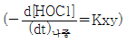
)- 75
- 60
- 50
- 25
(정답률: 40%)
18. 금속을 통해 흐르는 전류의 특성으로 가장 거리가 먼 것은?
- 금속의 화학적 성질은 변하지 않는다.
- 전류는 전자에 의해 운반된다.
- 온도의 상승은 저항을 증가시킨다.
- 대체로 전지저항이 용액의 경우보다 크다.
(정답률: 63%)
19. 급성독성을 평가하기 위하여 일반적으로 사용되는 기준은?
- TLm(Median Tolerance Limit)
- MicroTox
- Daphnia
- ORP(Oxidation - Reduction Potential)
(정답률: 64%)
20. 하천의 자정작용 단계 중 회복지대에 대한 설명으로 틀린 것은?
- 물이 비교적 깨끗하다.
- DO가 포화농도의 40% 이상이다.
- 박테리아가 크게 번성한다.
- 원생동물 및 윤충이 출현한다.
(정답률: 67%)
2과목: 상하수도계획
21. 취수관로 구조 결정 시 바람직하지 않은 것은?
- 취수관로를 고수부지에 부설하는 경우, 그 매설깊이는 원칙적으로 계획고수부지고에서 2m 이상 깊게 매설한다.
- 관로에 작용하는 내압 및 외압에 견딜 수 있는 구조로 한다.
- 사고 등에 대비하기 위하여 가능한 한 2열 이상으로 부설한다.
- 취수관로가 제방을 횡단하는 경우, 취수관로는 원지반보다는 가능한 한 성토부분에 매설하여 제방을 횡단하도록 한다.
(정답률: 64%)
22. 도시의 인구가 매년 일정한 비율로 증가한 결과라면 연 평균 증가율은? (단, 현재인구 450000명, 10년전 인구 200000명, 장래에 크게 발전할 가망성이 있는 도시)
- 0.225
- 0.084
- 0.438
- 0.076
(정답률: 44%)
23. 하수관로에 관한 내용으로 틀린 것은?
- 도관은 내산 및 내알칼리성이 뛰어나고 마모에 강하며 이형관을 제조하기 쉽다.
- 폴리에틸렌관은 가볍고 취급이 용이하여 시공성은 좋으나 산, 알칼리에 약한 단점이 있다.
- 덕타일주철관은 내압성 및 내식성이 우수하다.
- 파형강관은 용융아연도금된 강판을 스파이럴형으로 제작한 강관이다.
(정답률: 67%)
24. 하수관로시설의 황화수소 부식 대책으로 가장 거리가 먼 것은?
- 관거를 청소하고 미생물의 생식 장소를 제거한다.
- 환기에 의해 관내 황화수소를 희석한다.
- 황산염환원세균의 활동을 촉진시켜 황화수소 발생을 억제한다.
- 방식재료를 사용하여 관을 방호한다.
(정답률: 68%)
25. 급속여과지의 여과모래에 대한 설명으로 가장 거리가 먼 것은?
- 유효경은 0.45∼1.0mm의 범위 내에 있어야 한다.
- 균등계수는 1.7이하로 한다.
- 마모율은 3% 이하로 한다.
- 신규투입 여과사의 세척탁도는 5∼10도 범위 내에 있어야 한다.
(정답률: 49%)
26. 계획우수유출량의 산정방법으로 쓰이는 합리식
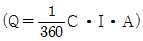
에 대한 설명으로 틀린 것은?- C는 유출계수이다.
- 우수유출량 산정에 있어 가장 기본이 되는 공식이다.
- I는 유달시간(t)내의 평균강우강도이다.
- A는 우수배제관거의 통수단면적이다.
(정답률: 64%)
27. 펌프의 토출량이 12m3/min, 펌프의 유효흡입수두 8m, 규정 회전수 2000회/분인 경우, 이 펌프의 비교 회전도는? (단, 양흡입의 경우가 아님)
- 892
- 1045
- 1286
- 1457
(정답률: 57%)
28. 공동현상(Cavitation)이 발생하는 것을 방지하기 위한 대책으로 틀린 것은?
- 흡입측 밸브를 완전히 개방하고 펌프를 운전한다.
- 흡입관의 손실을 가능한 크게 한다.
- 펌프의 위치를 가능한 한 낮춘다.
- 펌프의 회전속도를 낮게 선정한다.
(정답률: 69%)
29. 하수의 계획오염부하량 및 계획유입수질에 관한 내용으로 틀린 것은?
- 계획유입수질 : 계획오염부하량을 계획1일최대오수량으로 나눈 값으로 한다.
- 생활오수에 의한 오염부하량 : 1인1일당 오염부하량 원단위를 기초로 하여 정한다.
- 관광오수에 의한 오염부하량 : 당일관광과 숙박으류 나누고 각각의 원단위에서 추정한다.
- 영업오수에 의한 오염부하량 : 업무의 종류 및 오수의 특징 등을 감안하여 결정한다.
(정답률: 67%)
30. 상수처리시설 중 장방형 침사지의 구조에 관한 설명으로 틀린 것은?
- 지의 길이는 폭의 3∼8배를 표준으로 한다.
- 지의 고수위는 계획취수량이 유입될 수 있도록 취수구의 계획최저수위 이하로 정한다.
- 지내평균유속은 2∼7cm/sec를 표준으로 한다.
- 침사지 바닥경사는 1/20 이상의 경사를 두어야 한다.
(정답률: 60%)
31. 펌프효율 η=80%, 전양정 H=16m인 조건하에서 양수량 Q=12L/sec로 펌프를 회전시킨다면 이 때 필요한 축동력(kW)는? (단, 전동기는 직결, 물의 밀도 r=1000kg/m3)
- 1.28
- 1.73
- 2.35
- 2.88
(정답률: 48%)
32. 상수취수를 위한 저수시설 계획기준년에 관한 내용으로 ( )에 알맞은 것은?
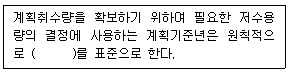
- 7개년에 제1위 정도의 갈수
- 10개년에 제1위 정도의 갈수
- 7개년에 제1위 정도의 홍수
- 10개년에 제1위 정도의 홍수
(정답률: 73%)
33. 상수도시설인 도수시설의 도수노선에 관한 설명으로 틀린 것은?
- 원칙적으로 공공도로 또는 용지로 한다.
- 수평이나 수직방향의 급격한 굴곡을 피한다.
- 관로상 어떤 지점도 동수경사선보다 낮게 위치하지 않도록 한다.
- 몇 개의 노선에 대하여 건설비 등의 경제성, 유지관리의 난이도 등을 비교·검토하고 종합적으로 판단하여 결정한다.
(정답률: 67%)
34. 상수도시설 중 저수시설인 하구둑에 관한 설명으로 틀린 것은? (단, 전용댐, 다목적댐과 비교)
- 개발수량 : 중소규모의 개발이 기대된다.
- 경제성 : 일반적으로 댐보다 저렴하다.
- 설치지점 : 수요지 가까운 하천의 하구에 설치하여 농업용수에 바닷물의 침해방지기능을 겸하는 경우가 많다.
- 저류수의 수질 : 자체관리로 비교적 양호한 수질을 유지할 수 있어 염소이온 농도에 대한 주의가 필요 없다.
(정답률: 70%)
35. 상수도시설인 급속여과지에 관한 내용으로 옳지 않은 것은?
- 여과속도는 단층의 경우 120∼150m/d를 표준으로 한다.
- 여과지 1지의 여과면적은 100m2이하로 한다.
- 여과면적은 계획정수량을 여과속도로 나누어 계산한다.
- 급속여과지는 중력식과 압력식이 있으며 중력식을 표준으로 한다.
(정답률: 69%)
36. 콘크리트조의 장방형 수로(폭 2m, 깊이 2.5m)가 있다. 이 수로의 유효수심이 2m인 경우의 평균유속(m/sec)은? (단, Manning 공식 이용, 동수경사=1/2000, 조도계수=0.017) (문제오류로 인하여 실제 시험에서는 1, 2, 3, 4번이 모두 정답처리 되었습니다. 여기서는 1번을 누르면 정답 처리됩니다.)
- 0.91
- 1.42
- 1.53
- 1.73
(정답률: 64%)
37. 유역면적이 100ha이고 유입시간(time of inlet)이 8분, 유출계수(C)가 0.38일 때 최대계획우수유출량(m3/sec)은? (단, 하수관거의 길이(L)=400m, 관유속=1.2m/sec로 되도록 설계,
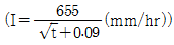
, 합리식 적용)- 약 18
- 약 24
- 약 36
- 약 42
(정답률: 50%)
38. 하수관로의 접합방법을 정할 때의 고려 사항으로 ( )에 가장 적합한 것은?
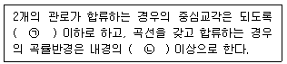
- ㉠ 60° ㉡ 5배
- ㉠ 60° ㉡ 3배
- ㉠ 30∼45° ㉡ 5배
- ㉠ 30∼45° ㉡ 3배
(정답률: 54%)
39. 하수도시설인 유량조정조에 관한 내용으로 틀린 것은?
- 조의 용량은 체류시간 3시간을 표준으로 한다.
- 유효수심은 3∼5m를 표준으로 한다.
- 유량조정조의 유출수는 침사지에 반송하거나 펌프로 일차침전지 혹은 생물반응조에 송수한다.
- 조내의 침전물의 발생 및 부패를 방지하기 위해 교반장치 및 산기장치를 설치한다.
(정답률: 63%)
40. 단면형태가 직사각형인 하수관로의 장·단점으로 옳은 것은?
- 시공장소의 흙두께 및 폭원에 제한을 받는 경우에 유리하다.
- 만류가 되기까지는 수리학적으로 불리하다.
- 철근이 해를 받았을 경우에도 상부하중에 대하여 대단히 안정적이다.
- 현장 타설의 경우, 공사기간이 단축된다.
(정답률: 41%)
3과목: 수질오염방지기술
41. 폐수를 활성슬러지법으로 처리하기 위한 실혐에서 BOD를 90% 제거하는데 6시간의 aeration이 필요하였다. 동일한 조건으로 BOD를 95% 제거하는데 요구되는 포기시간(hr)은? (단, BOD 제거반응은 1차반응(base 10)에 따른다.)
- 7.31
- 7.81
- 8.31
- 8.81
(정답률: 53%)
42. 활성탄 흡착 처리 공정의 효율이 가장 낮은 것은?
- 음용수의 맛과 냄새물질 제거 공정
- 트리할로메탄, 농약, 유기 염소 화합물과 같은 미량 유기 물질 제거 공정
- 처리된 폐수의 잔존 유기물 제거 공정
- 산업폐수 및 침출수 처리
(정답률: 44%)
43. 수처리 과정에서 부유되어 있는 입자의 응집을 초래하는 원인으로 가장 거리가 먼 것은?
- 제타 포텐셜의 감소
- 플록에 의한 체거름 효과
- 정전기 전하 작용
- 가교현상
(정답률: 51%)
44. 폐수 처리시설을 설치하기 위한 설계 기준이 다음과 같을 때 필요한 활성슬러지 반응조의 수리학적 체류시간(HRT, hr)은? (단, 일 폐수량= 40L, BOD농도=20000mg/L, MLSS=5000mg/L, F/M=1.5kg BOD/kg MLSS·day)
- 24
- 48
- 64
- 88
(정답률: 45%)
45. 미처리 폐수에서 냄새를 유발하는 화합물과 냄새의 특징으로 가장 거리가 먼 것은?
- 황화수소 - 썩은 달걀냄새
- 유기 화합물 - 썩은 채소냄새
- 스카톨 - 배설물 냄새
- 디아민류 - 생선 냄새
(정답률: 62%)
46. 생물학적 처리공정에서 질산화 반응은 다음의 총괄 반응식에서 나타낼 수 있다.
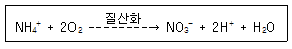
NH4+-N 3 mg/L가 질산화 되는데 요구되는 산소의 양(mg/L)은?
- 11.2
- 13.7
- 15.3
- 18.4
(정답률: 55%)
47. 유입 폐수량 50m3/hr, 유입수 BOD 농도 200g/m3, MLVSS 농도 2kg/m3, F/M 비 0.5kg BOD/kg MLVSS·day일 때, 포기조 용적(m3)은?
- 240
- 380
- 430
- 520
(정답률: 50%)
48. 기체가 물에 녹을 때 Henry법칙이 적용된다. 다음 설명 중 적합하지 않은 것은?
- 수온이 증가할수록 기체의 포화용존 농도는 높아진다.
- 염분의 농도가 증가할수록 기체의 포화용존 농도는 낮아진다.
- 기체의 포화용존 농도는 기체상태의 분압에 비례한다.
- 물에 용해되어 이온화하는 기체에는 적용되지 않는다.
(정답률: 44%)
49. 심층포기법의 장점으로 옳지 않은 것은?
- 지하에 건설되므로 부지면적이 작게 소요되며, 외기와 접하는 부분이 작아 온도 영향이 적다.
- 고압에서 산소전달을 하므로 산소전달율이 높다.
- 산소전달율이 높아 MLSS을 높일 수 있어 농도가 높은 폐수를 처리할 수 있고, BOD 용적부하를 증가시킬 수 있어 단위 체적당 처리량을 증가시킬 수 있다.
- 깊은 하부에 MLSS와 폐수를 같이 순환시키는데 에너지가 적게 소요된다.
(정답률: 56%)
50. 대장균의 사멸속도는 현재의 대장균수에 비례한다. 대장균의 반감기는 1시간이며, 시료의 대장균수는 1000개/mL이라면, 대장균의 수가 10개/mL가 될 때까지 걸리는 시간(hr)은?
- 약 4.7
- 약 5.7
- 약 6.7
- 약 7.7
(정답률: 56%)
51. 1일 10000m3의 폐수를 급속환화지에서 체류시간 60sec, 평균속도경사(G) 400sec-1인 기계식고속 교반장치를 설치하여 교반하고자 한다. 이 장치에 필요한 소요 동력(W)은? (단, 수온 10℃, 점성계수(-μ)=1.307×10-3kg/m·s)
- 약 2621
- 약 2226
- 약 1842
- 약 1452
(정답률: 42%)
52. 다음 중 폐수처리방법으로 가장 적절하지 않은 것은?
- 시안(CN) 함유 폐수를 처리하기 위해 pH를 4 이하로 조정하고 차아염소산나트륨(NaClO)을 사용하였다.
- 카드뮴(Cd) 함유 폐수를 처리하기 위해 pH를 10 정도로 조정하고 수산화나트륨(NaOH)을 사용하였다.
- 크롬(Cr) 함유 폐수를 처리하기 위해 pH를 3 정도로 조정하고 황산철(FeSO4)을 사용하였다.
- 납(Pb) 함유 폐수를 처리하기 위해 pH를 10 정도로 조정하고 수산화나트륨(NaOH)을 사용하였다.
(정답률: 41%)
53. 유량 20000m3/day, BOD 2mg/L인 하천에 유량 500m3/day, BOD 500mg/L인 공장 폐수를 폐수처리시설로 유입하여 처리 후 하천으로 방류시키고자 한다. 완전히 혼합된 후 합류지점의 BOD를 3mg/L 이하로 하고자 한다면 폐수처리시설의 BOD 제거율(%)은? (단, 혼합 후의 기타변화는 없다고 가정)
- 61.8
- 76.9
- 87.2
- 91.4
(정답률: 34%)
54. 지름이 0.⑤mm이고 비중이 0.6인 기름방울은 비중이 0.8인 기름방울보다 수중에서의 부상속도가 얼마나 더 큰가? (단, 물의 비중=1.0)
- 1.5배
- 2.0배
- 2.5배
- 3.0배
(정답률: 47%)
55. 생물학적 질소, 인 제거공정에서 포기조의 기능과 가장 거리가 먼 것은?
- 질산화
- 유기물 제거
- 탈질
- 인 과잉섭취
(정답률: 56%)
56. 입자의 침전속도가 작게 되는 경우는? (단, 기타 조건은 동일하며 침전속도는 스톡스법칙에 따른다.)
- 부유물질 입자 밀도가 클 경우
- 부유물질 입자의 입경이 클 경우
- 처리수의 밀도가 작을 경우
- 처리수의 점성도가 클 경우
(정답률: 57%)
57. 유입유량 500000m3/day, BOD5 200mg/L인 폐수를 처리하기 위해 완전혼합형 활성슬러지 처리장을 설계하려고 한다. 1차침전지에서 제거된 유입수 BOD5 34%, MLVSS 3000mg/L, 반응속도상수(K) 1.0 L/g MILVSS·hr 이라면, 일차반응일 경우 F/M비(kg BOD/kg MLVSS·day)는? (단, 유출수 BOD5=10mg/L)(오류 신고가 접수된 문제입니다. 반드시 정답과 해설을 확인하시기 바랍니다.)
- 0.24
- 0.28
- 0.32
- 0.36
(정답률: 19%)
58. 다음 활성슬러지 포지조의 수질 측정값에 대한 설명으로 옳은 것은? (단, 수온=27℃, pH 6.5, DO=1mg/L, MLSS=2500mg/L, 유입수 BOD=100mg/L, 유입수 NH3-N=6mg/L, 유입수 PO43--P=2mg/L, 유입수 CN-=5mg/L)
- F/M 비가 너무 낮으므로 MLSS농도를 1000mg/L 정도로 낮춘다.
- 수온은 15℃ 정도, pH는 8.5 정도, DO는 2mg/L 정도로 조정하는 것이 좋다.
- 미생물의 원활한 성장을 위해 질소와 인을 추가 공급할 필요가 있다.
- CN-는 포기조에 유입되지 않도록 하는 것이 좋다.
(정답률: 44%)
59. 부유입자에 의한 백색광 산란을 설명하는 Raleigh의 법칙은? (단, I:산란광의 세기, V:입자의 체적, λ:빛의 파장, n:입자의 수)
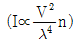
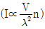
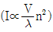
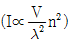
(정답률: 60%)
60. 플록을 형성하여 침강하는 입자들이 서로 방해를 받으므로 침전속도는 점차 감소하게 되며 침전하는 부유물과 상등수간에 뚜렷한 경계면이 생기는 침전형태는?
- 지역침전
- 압축침전
- 압밀침전
- 응집침전
(정답률: 64%)
4과목: 수질오염공정시험기준
61. 수질분석 관련 용어의 설명 중 잘못된 것은?
- 수욕상 또는 수욕중에서 가열한다라 함은 따로 규정이 없는 한 수온 100℃에서 가열함을 뜻한다.
- 용액의 산성, 중성 또는 알칼리성을 검사할 때는 규정이 없는 한 유리전극법에 의한 pH 미터로 측정하고 구체적으로 표시할 때는 pH 값을 쓴다.
- 진공이라 함은 15mmH2O 이하의 진공도를 말한다.
- 분석용 저울은 0.1mg까지 달 수 있는 것이어야 한다.
(정답률: 57%)
62. 배수로에 흐르는 폐수의 유량을 부유체를 사용하여 측정했다. 수로의 평균단면적 0.5m2, 표면 최대속도 6m/s 일 때 이 폐수의 유량(m3/min)은? (단, 수로의 구성, 재질, 수로단면의 형상, 기울기 등이 일정하지 않은 개수로)
- 115
- 135
- 185
- 245
(정답률: 44%)
63. 퇴적물 채취기 중 포나 그랩(ponar grab)에 관한 설명으로 틀린 것은?
- 모래가 많은 지점에서도 채취가 잘되는 중력식 채취기 이다.
- 채취기를 바닥 퇴적물 위에 내린 후 메신저를 투하하면 장방형 상자의 밑판이 닫힌다.
- 부드러운 펄층이 두터운 경우에는 깊이 빠져 들어가기 때문에 사용하기 어렵다.
- 원래의 모델은 무게가 무겁고 커서 윈치등이 필요하지만 소형의 포나 그랩은 윈치없이 내리고 올리 수 있다.
(정답률: 52%)
64. 시료의 전처리 방법인 필로리딘다이티오카르바민산 암모늄 추출법에서 사용하는 지시약으로 알맞은 것은?
- 티몰블루·에틸알코올용액
- 메타이소부틸 에틸알코올용액
- 브로모페놀블루·에틸알코올용액
- 메타크레졸퍼플 에틸알코올용액
(정답률: 47%)
65. 자외선/가시선 분광법으로 분석할 때 측정파장이 가장 긴 것은?
- 구리
- 아연
- 카드뮴
- 크롬
(정답률: 44%)
66. 유리전극에 의한 pH측정에 관한 설명으로 알맞지 않은 것은?
- 유리전극을 미리 정제수에 수 시간 담가둔다.
- pH 전극 보정 시 측정기의 전원을 켜고 시험 시작까지 30분 이상 예열한다.
- 전극을 프탈산염 표준용액(pH 6.88) 또는 pH 7.00 표준용액에 담그고 표시된 값을 보정한다.
- 온도보정 시 pH 4 또는 표준용액에 전극을 담그고 표준용액의 온도를 10℃∼30℃ 사이로 변화시켜 5℃ 간격으로 pH를 측정하여 차이를 구한다.
(정답률: 40%)
67. 기체크로마토그래피에 의한 알칼수은의 분석방법으로 ( )에 알맞은 것은?
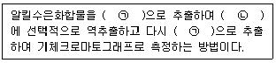
- ㉠ 헥산, ㉡ 염화메틸수은용액
- ㉠ 헥산, ㉡ 크로모졸브용액
- ㉠ 벤젠, ㉡ 펜토에이트용액
- ㉠ 벤젠, ㉡ L-시스테인용액
(정답률: 54%)
68. 유도결합 플라스마 발광분석장치의 측정 시 플라스마 발광부 관측 높이는 유도 코일 상단으로부터 얼마의 범위(mm)에서 측정하는가? (단, 알칼리 원소는 제외)
- 15∼18
- 35∼38
- 55∼58
- 75∼78
(정답률: 44%)
69. 다이메틸글리옥심을 이용하여 정량하는 금속은?
- 아연
- 망간
- 니켈
- 구리
(정답률: 40%)
70. 이온전극법에서 격막형 전극을 이용하여 측정하는 이온이 아닌 것은?
- F-
- CN-
- NH4+
- NO2-
(정답률: 41%)
71. 불소화합물의 분석방법과 가장 거리가 먼 것은? (단, 수질오염공정시험기준 기준)
- 자외선/가시선 분광법
- 이온전극법
- 이온크로마토그래피
- 불꽃 원자흡수분광광도법
(정답률: 46%)
72. 총질소의 측정원리에 관한 내용으로 ( )에 알맞은 것은?
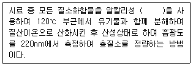
- 과황산칼륨
- 몰리브덴산 암모늄
- 염화제일주석산
- 이스코르빈산
(정답률: 40%)
73. 공장폐수의 BOD를 측정하기 위해 검수에 희석을 가하여 50배로 희석하여 20℃, 5일 배양하였다. 희석 후 초기 DO를 측정하기 위해 소모된 0.025N-Na2S2O3의 양은 4.0mL였으며 5일 배양 후 DO를 측정하는데 0.025N-Na2S2O3 2.0mL 소모되었을 때 공장폐수의 BOD(mg/L)는? (단, BOD 병=285mL, 적정에 액량=100mL, BOD병에 가한 시약은 황산망간과 아지드나트륨 용액=총 2mL, 적정시액의 factor=1)
- 201.5
- 211.5
- 221.5
- 231.5
(정답률: 21%)
74. 시료의 용기를 폴리에틸렌병으로 사용하여도 무방한 항목은?
- 노말핵산추출물질
- 페놀류
- 유기인
- 음이온계면활성제
(정답률: 42%)
75. 원자흡수분광광도법에서 공존물질과 작용하여 해리하기 어려운 화합물이 생성되어 흡광에 관계하는 기저상태의 원자수가 감소하는 경우 일어나는 화학적 간섭을 피하는 방법이 아닌 것은?
- 이온교환이나 용매추출 등을 이용하여 방해물질을 제거한다.
- 과량의 간섭원소를 첨가한다.
- 간섭을 피하는 양이온, 음이온 또는 은폐제, 킬레이트제 등을 첨가한다.
- 표준시료와 분석시료와의 조성을 같게 한다.
(정답률: 35%)
76. 시료 채취 시 유의사항으로 틀린 것은?
- 시료 채취 용기는 시료를 채우기 전에 시료로 3회 이상 씻은 다음 사용한다.
- 유류 또는 부유물질 등이 함유된 시료는 균질성이 유지될 수 있도록 채취햐야 하며, 침전물 등이 부상하여 혼입되어서는 안된다.
- 심부층의 지하수 채취 시에는 고속양수펌프를 이용하여 채취시간을 최소화함으로써 수질의 변질을 방지하여야 한다.
- 용존가스, 환원성 물질, 휘발성유기화합물, 냄새, 유류 및 수소이온 등을 측정하기 위한 시료를 채취할 때는 운반 중 공기와의 접촉이 없도록 시료 용기에 가득 채운 후 빠르게 뚜껑을 닫는다.
(정답률: 56%)
77. 자외선/가시선 분광법으로 불소 시험 중 탈색현상이 나타났을 때 원인이 될 수 있는 것은?
- 황산이 분해되어 유출된 경우
- 염소이온이 다량 함유되어 있을 경우
- 교반속도가 일정하지 않았을 경우
- 시료 중 불소함량이 정량범위를 초과할 경우
(정답률: 32%)
78. 반드시 유리시료용기를 사용하여 시료를 보관해야 하는 항목은?
- 염소이온
- 총인
- 시안
- 유기인
(정답률: 41%)
79. NaOH 0.01M은 몇 mg/L 인가?
- 40
- 400
- 4000
- 40000
(정답률: 57%)
80. 자외선/가시선 분광법을 적용하여 페놀류를 측정할 때 간섭물질에 관한 설명으로 ( )에 옳은 것은?
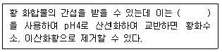
- 염산
- 질산
- 인산
- 과염소산
(정답률: 37%)
5과목: 수질환경관계법규
81. 낚시제한구역에서의 낚시방법의 제한사항 기준으로 옳은 것은?
- 1개의 낚시대에 4개 이상의 낚시바늘을 떡밥과 뭉쳐서 미끼로 던지는 행위
- 1개의 낚시대에 5개 이상의 낚시바늘을 떡밥과 뭉쳐서 미끼로 던지는 행위
- 1명당 2대 이상의 낚시대를 사용하는 행위
- 1명당 3대 이상의 낚시대를 사용하는 행위
(정답률: 52%)
82. 비점오염원의 변경신고 기준으로 옳지 않은 것은?
- 상호, 대표자, 사업명 또는 업종의 변경
- 총 사업면적, 개발면적 또는 사업장 부지 면적이 처음 신고면적의 100분의 30 이상 증가하는 경우
- 비점오염저감시설의 종류, 위치, 용량이 변경되는 경우
- 비점오염원 또는 비점오염저감시설의 전부 또는 일부를 폐쇄하는 경우
(정답률: 48%)
83. 수질오염경보(조류경보) 발령 단계 중 조류 대발생 시 취수장·정수장 관리자의 조치사항은?
- 주 2회 이상 시료채취·분석
- 정수의 독소분석 실시
- 발령기관에 대한 시험분석결과의 신속한 통보
- 취수구 및 조류가 심한 지역에 대한 방어막 설치 등 조류 제거 조치 실시
(정답률: 41%)
84. 폐수재이용업의 등록기준에 대한 설명 중 틀린 것은?
- 저장시설 : 원폐수 및 재이용 후 발생되는 폐수 저장시설의 용량은 1일 8시간 최대처리량의 3일분 이상의 규모이어야 한다.
- 건조시설 : 건조 잔류물이 외부로 누출되지 않는 구조로 건조잔류물의 수분 함량이 75퍼센트 이하의 성능이어야 한다.
- 소각시설 : 소각시설의 연소실 출구 배출가스 온도조건은 최소 850℃ 이상 체류시간은 최소 1초 이상이어야 한다.
- 운반장비 : 폐수운반차량은 흑색으로 도색하고 노란색 글씨로 폐수운반차량, 회사명, 등록번호 및 용량 등을 일정한 크기로 표시하여야 한다.
(정답률: 49%)
85. 중점관리저수지의 관리자와 그 저수지의 소재지를 관할하는 시·도지사가 수립하는 중점관리저수지의 수질오염방지 및 수질개선에 관한 대책에 포함되어야 하는 사항으로 ( )에 옳은 것은?
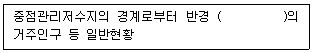
- 500m 이내
- 1km 이내
- 2km 이내
- 5km 이내
(정답률: 51%)
86. 시·도지사가 설치할 수 있는 측정망의 종류에 해당하는 것은?
- 비점오염원에서 배출되는 비점오염물질 측정망
- 퇴적물 측정망
- 도심하천 측정망
- 공공수역 유해물질 측정망
(정답률: 51%)
87. 대권역 물환경관리계획에 포함되어야 할 사항으로 틀린 것은?
- 상수원 및 물 이용현황
- 점오염원, 비점오염원 및 기타수질오염원의 분포현황
- 점오염원, 비점오염원 및 기타수질오염원의 수질오염 저감시설 현황
- 점오염원, 비점오염원 및 기타수질오염원에서 배출되는 수질오염물질의 양
(정답률: 43%)
88. 시·도지사가 오염총량관리기본계획의 승인을 받으려는 경우 오염총량관리기본계획안에 첨부하여 환경부장관에게 제출하여야 하는 서류가 아닌 것은?
- 유역환경의 조사·분석 자료
- 오염부하량의 저감계획을 수립하는 데에 사용한 자료
- 오염총량목표수질을 수립하는 데에 사용한 자료
- 오염부하량의 산정에 사용한 자료
(정답률: 35%)
89. 공공폐수처리시설 배수설비의 설치방법 및 구조기준으로 옳지 않은 것은?
- 배수관의 관경은 안지름 150mm 이상으로 하야야 한다.
- 배수관은 우수관과 합류하여 설치하여야 한다.
- 배수관의 기점·종점·합류점·굴곡점과 관경·관 종류가 달라지는 지점에는 맨홀을 설치하여야 한다.
- 배수관 입구에는 유효간격 10mm 이하의 스크린을 설치하야야 한다.
(정답률: 41%)
90. 중권역 환경관리위원회의 위원으로 될 수 없는 자는?
- 수자원 관계 기관의 임직원
- 지방의회의원
- 관계 행정기관의 공무원
- 영리 민간단체에서 추천한 자
(정답률: 52%)
91. 수질 및 수생태계 환경기준에서 해역의 생활환경 기준으로 옳지 않은 것은?
- 수소이온농도(pH) : 6.5∼8.5
- 용매추출유분(mg/L) : 0.01 이하
- 총대장균군(총대장균군수/100mL) : 1000 이하
- 총인(mg/L) : 0.⑤ 이하
(정답률: 37%)
92. 수질오염경보(조류경보) 단계 중 다음 발령·해제 기준의 설명에 해당하는 단계는? (단, 상수원 구간)
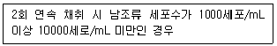
- 관심
- 경보
- 조류대발생
- 해제
(정답률: 49%)
93. 초과부과금 산정 시 적용되는 수질오염물질 1킬로그램당 부과금액이 가장 낮은 것은?
- 크롬 및 그 화합물
- 유기인화합물
- 시안화합물
- 비소 및 그 화합물
(정답률: 27%)
94. 수질오염 방지시설 중 생물화학적 처리시설이 아닌 것은?
- 살균시설
- 폭기시설
- 산화시설(산화조 또는 산화지)
- 안정조
(정답률: 50%)
95. 제2종 사업장에 해당되는 폐수배출량은?
- 1일 배출량이 50m3이상, 200m3미만
- 1일 배출량이 100m3이상, 300m3미만
- 1일 배출량이 500m3이상, 2000m3미만
- 1일 배출량이 700m3이상, 2000m3미만
(정답률: 53%)
96. 위임업무 보고사항 중 보고 횟수가 연 4회에 해당되는 것은?
- 측정기기 부착사업자에 대한 행정처분 현황
- 측정기기 부착사업장 관리 현황
- 비점오염원의 설치신고 및 방지시설 설치 현황 및 행정처분 현황
- 과징금 부과 실적
(정답률: 44%)
97. 폐수무방류배출시설의 세부설치기준에 관한 내용으로 ( )에 옳은 내용은?
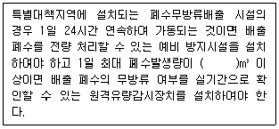
- 100
- 200
- 300
- 500
(정답률: 39%)
98. 기본배출부과금의 부과 대상이 되는 수질오염물질은?
- 유기물질
- BOD
- 카드뮴
- 구리
(정답률: 30%)
99. 비점오염방지시설의 유형별 기준 중 자연형 시설이 아닌 것은?
- 저류시설
- 침투시설
- 식생형 시설
- 스크린형 시설
(정답률: 53%)
100. 1일 폐수배출량이 2천m3 이상인 사업장에서 생물화학적산소요구량의 농도가 25mg/L의 폐수를 배출하였다면, 이 업체의 방류수수질기준 초과에 따른 부과계수는? (단, 배출허용기준에 적용되는 지역은 청정지역 임)
- 2.0
- 2.2
- 2.4
- 2.6
(정답률: 36%)